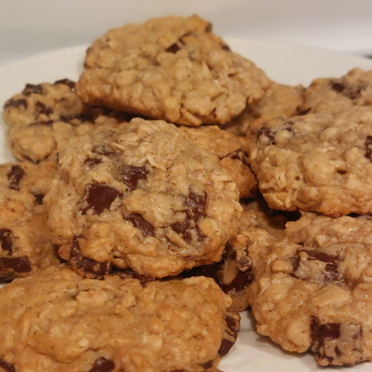

Home
Oatmeal Raisin Cookies

Description
Oatmeal raisin cookies, grabbed commonly in mistake as chocolate chip cookies, are made out of oatmeal dough and with raisins added in. Occasionally, there are additional spices put in.
Depending on the way they are made, sometimes these cookies aren't even healthier or lower in calories than their chocolate chip counterpart. However, this isn't to say that their taste in any worse either.
The ingredients and steps are taken and based upon Darlene's Oatmeal Raisin Cookies recipe.
Ingredients
- ¾ cup butter, softened
- ¾ cup white sugar
- ¾ cup packed light brown sugar
- 2 large eggs
- 1 tsp vanilla extract
- 1 ¼ cups all-purpose flour
- 1 tsp baking soda
- ¾ tsp ground cinnamon
- ½ tsp salt
- 2 ¾ cups rolled oats
- 1 cup raisins
Steps
- Preheat the oven to 375°F.
- Line cookie sheets with parchment paper.
- Beat butter, white sugar, and brown sugar in a large bowl. Beat until it is smooth and creamy.
- After, beat in eggs and vanilla until mixture appears fluffy.
- In a separate bowl, stir together flour, baking soda, cinnamon, and salt.
- Slowly beat the flour mixture into the butter mixture.
- Stir in your oats and raisins.
- Place your desired size of cookie batter onto the cookie sheets and bake for 8 to 10 minutes.
- After baking, let sit on cookie sheets to cool slightly. Then, move the cookies to a wire rack to cool completely.
- Enjoy!